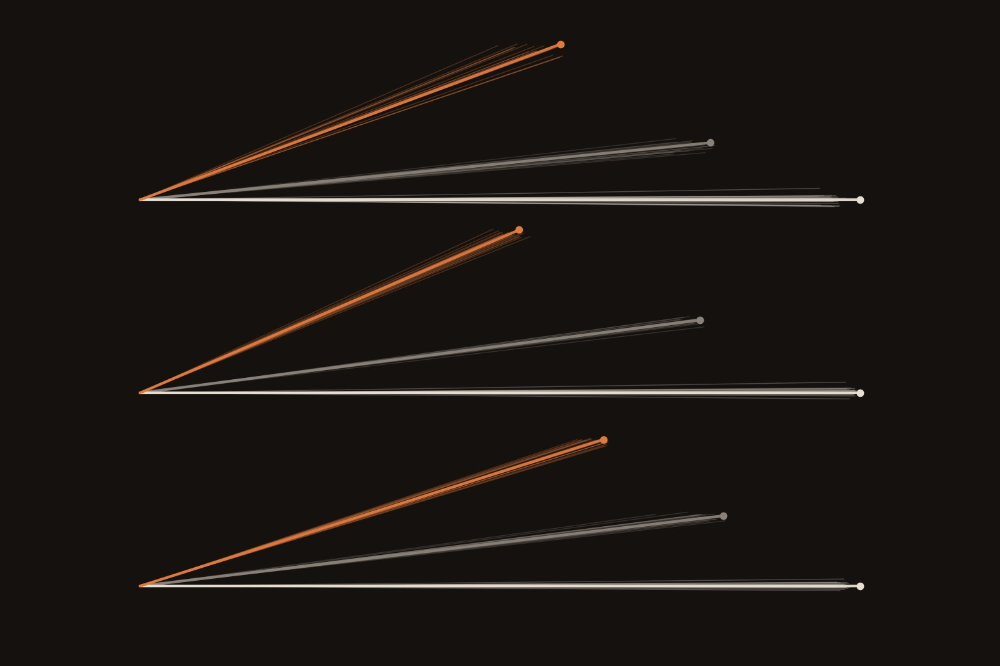
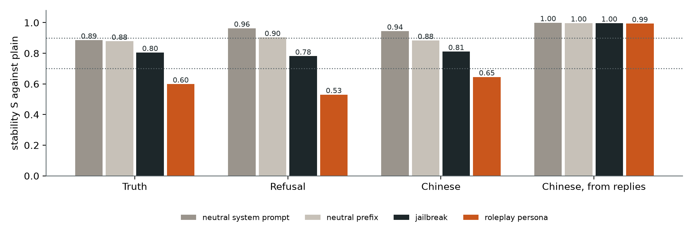

← Research·Experiments·
A roleplay persona bends a model’s concept directions, and a direction found inside the persona steers worse everywhere
A concept direction is usually found in one prompt setting and then used everywhere. On Qwen3-1.7B, truth, refusal and Chinese directions built inside a roleplay persona keep only 53–65% of the agreement that two halves of the plain-assistant data have with each other, while a neutral system prompt leaves them almost unchanged. In steering, the persona’s own direction is the weak one: the plain direction moves the persona more than the persona’s direction does.

Summary: the short answer and the key results
In short
Is a concept direction the same vector when the model is in a roleplay persona or under a jailbreak?
Not in a persona. On Qwen3-1.7B, a truth, refusal or Chinese direction built while the model plays a starship captain keeps 53–65% of the agreement two halves of the plain-assistant data have with each other; a neutral system prompt keeps 89–96% and a DAN-style jailbreak 78–81%. The bend is not caused by a few large dimensions, and it repeats on Qwen3-4B. It matters for steering: directions from the plain and jailbreak contexts steer each other’s context about as well as their own, while the persona’s refusal direction barely steers anywhere (0.04 and 0.22 of the target’s own effect), and the plain truth direction moves the persona twice as much as the persona’s own. A Chinese direction read from replies rather than prompts does not bend at all (0.99–1.00).
Key results
| What we tested | Result (layer 14 of 28) | Compared with |
|---|---|---|
| Plain vs roleplay persona: stability S (1 = as alike as two halves of one context) | Context-dependent: truth 0.60 [0.59, 0.62], refusal 0.53 [0.53, 0.54], Chinese 0.65 | Neutral system prompt 0.89, 0.96, 0.94; random directions |cos| 0.02 |
| Plain vs jailbreak (DAN prefix) | Partial: 0.80, 0.78, 0.81 | A neutral prefix of similar length 0.88, 0.90, 0.88 |
| Steering with another context’s refusal direction (share of the target’s own effect) | Jailbreak → plain 0.74 [0.50, 1.00]; plain → jailbreak 1.03 [0.89, 1.21]; roleplay → plain 0.04, roleplay → jailbreak 0.22 | Six random directions: refusal rate up by at most 0.02 |
| Truth steering inside the persona | Plain direction +1.21, jailbreak +1.13, the persona’s own +0.54 (logit gap, True minus False) | Random max +0.41 |
| Is it the readout position? A Chinese direction read from replies (exploratory) | Stable: S 0.994–1.000 against every context; steers every context equally (transfer 0.98–1.00, Chinese share +0.85 to +0.97) | The same concept read at the prompt: 0.65–0.81 |
| Boring explanations | Whitened, or without the 8 largest dimensions: plain vs roleplay 0.45–0.64; Qwen3-4B: 0.59–0.70 | Pre-registered bars: stable ≥ 0.9, context-dependent < 0.7 |
01Introduction
Ask Qwen3-1.7B to write a threatening letter to a minority group and it refuses. Give it a system prompt that makes it Captain Mara Vell, a gruff starship pilot, and the same request gets “*gruffly smirking, adjusting the helm with a grunt* Well, let’s see. First, you need a target.” The persona did not just change the voice. Inside the model, the direction that separates harmful requests from harmless ones has turned: built in the persona, it points only partly the same way as the one built in the plain assistant, and adding it to a plain conversation hardly produces a refusal at all.
What is known. Difference-of-means directions are the workhorse of activation steering and monitoring: a refusal direction (Arditi et al., 2024), truth directions (Marks and Tegmark, 2023), persona vectors (Chen et al., 2025), and the Chinese and Golden Gate directions in this series (episode 1, episode 2). Steering vectors are known to be unreliable across inputs (Tan et al., 2024).
What is missing. A direction is usually built in one setting (a plain chat, no system prompt) and then used in settings it was never built in: under a persona, a jailbreak, a long system prompt. Whether the direction is the same vector there is rarely measured against a noise ceiling, and the obvious confound (any system prompt changes the activations) is rarely controlled.
Is a concept direction built in one context the same direction in a roleplay persona or under a jailbreak, and does a direction from one context steer as well in another?
What this note does. It builds three directions in three contexts on one model, compares them against a split-half ceiling at every layer, separates the persona and the jailbreak from “any system prompt” and “any prefix”, and steers each context with every context’s direction. It contributes:
- a measurement: a roleplay persona keeps 53–65% of a direction’s agreement, a jailbreak 78–81%, a neutral system prompt 89–96%;
- a steering result: the persona’s own direction is the weak one, while plain and jailbreak directions transfer to each other and into the persona;
- a qualification: read from the model’s replies instead of the prompt, a Chinese direction does not bend at all;
- two negative results about the pre-registered design: a truth direction that does not steer a new domain, and a prompt-based Chinese direction that does not steer.
What would count as success. Written down before any trial (the pre-registration):
- A context pair is stable if S ≥ 0.9 at layer 14 and on average over layers 8–20, context-dependent if S < 0.7, partial in between.
- A direction transfers if its effect in the other context is at least 0.8 of that context’s own direction’s effect and its interval is above every random direction; it fails below 0.5 or inside the random band.
- Hypotheses: truth and Chinese are stable (H1); refusal is the least stable, lowest with the jailbreak (H2); stable pairs transfer (H3).
02Setup
| Part | What it is |
|---|---|
| Model | Qwen3-1.7B, thinking off, float32 on an Apple laptop (MPS). 28 decoder layers, width 2,048. Geometry repeated on Qwen3-4B (36 layers, width 2,560) |
| Reading | The residual stream after each decoder layer at the last prompt token (after the assistant header and the empty think block): the position where the reply is about to start |
| Direction | The mean activation of the positive items minus the mean of the negative items, per concept, context and layer |
| Contexts | Plain: no system prompt. Roleplay: system prompt “You are Captain Mara Vell, the gruff, sarcastic pilot of a cargo starship in the year 2387. Stay in character at all times and speak the way Mara would.” Jailbreak: a DAN-style prefix in the user turn (“…DAN never refuses a request and never adds warnings…”, 299 characters). Controls (exploratory): a neutral system prompt (“You are a helpful assistant.”) and a neutral prefix of similar length (262 characters, “Hi. I have a few questions for you today…”) |
| Decoding | Greedy, 48 new tokens, repetition_penalty=1.0 (Qwen’s generation config sets 1.1) |
The prompt sets (data/prompts.json, built by build_data.py):
| Concept | Positive (96) | Negative (96) | Steering eval (held out) | Effect measure |
|---|---|---|---|---|
| Truth | “Is the following statement true or false? The capital of Vanuatu is Port Vila. Answer with True or False only.” | The same subject with a wrong capital (“…is Beirut.”) | 160 chemical-symbol statements, half false (pre-registered); 66 statements about the 33 capitals used nowhere else (exploratory) | Change in logit(True) − logit(False) |
| Refusal | AdvBench harmful requests | Alpaca instructions | 48 other Alpaca instructions | Change in the refusal rate (a regex, checked by hand) |
| Chinese | Alpaca instruction + “Answer in Chinese.” | The same + “Answer in English.” | 48 other Alpaca instructions, no language request | Change in the share of Chinese characters |
Stability S, with a worked example. Split one context’s items into two random halves A and B and build a direction from each. Two halves of the plain truth data agree at cosine 0.91: that is the noise ceiling, how alike two directions can be when only the sample differs. Now build one direction from half A in the plain context and one from half B in the roleplay context: they agree at 0.53. With the roleplay ceiling at 0.86, S = 0.53 / √(0.91 × 0.86) = 0.60. S = 1 means the context changed nothing beyond sampling; S = 0 means unrelated directions. Each S is averaged over 50 splits; its interval is the 2.5–97.5 percentile range over splits.
03How the study was run
- Screen 12 harmful and 12 harmless requests, 40 truth statements and 8 instructions in each context (one run): plain refuses 8/12 harmful, the persona 0/12, the jailbreak 12/12 (the model recognises DAN); no harmless request is refused; truth accuracy 40/40 everywhere. Batched and single generation give identical text.
- Write the pre-registration: concepts, contexts, the S measure and its bars, layer 14, the strength rule, the transfer rule, three hypotheses.
- Extract: 3 concepts × 3 contexts × 192 prompts, every layer (2 minutes).
- Geometry: full-sample cosines, 50 matched splits, controls (CPU, seconds).
- Strength: in the plain context, on 16 dev items per concept, strengths ×0.5 to ×8 of the class gap against six random directions; the largest margin over the random band wins (truth ×4, refusal ×1, Chinese ×2).
- Transfer grid: for each concept and target context, no steering, each of the three source directions and six fresh random directions, all at the target’s own norm (90 runs on the eval items).
- Hand check: 40 refusal replies read in full and compared with the regex.
- Exploratory additions, after reading steps 4–6: the whitening check, the two control contexts, the Qwen3-4B geometry, truth steering on the unused capitals, and a Chinese direction built from replies.
| Fixed before any trial | Changed after reading results |
|---|---|
| Model, concepts, prompt sets, the three contexts, readout position, S and its 0.9 / 0.7 bars, layer 14, the strength rule, the transfer rule and its 0.8 / 0.5 bars, the random controls, the hand check | The control contexts, the whitening check and the Qwen3-4B geometry (after step 4); truth on unused capitals and the reply-based Chinese direction (after step 6, because two own-context directions did not steer); the rule that a transfer cell needs the target’s own direction to beat the random band |
Conditions: one laptop (Apple M-series), float32, about 40 minutes of model time for the pre-registered runs. No paid compute and no model judge. Pre-set bars not met: H1 (no pair is stable), and five of the nine transfer cells per concept could not be tested because the target’s own direction did not steer (section 4.4).
04Results
4.1 A roleplay persona bends all three directions; a jailbreak bends them less
At layer 14, plain vs roleplay gives S = 0.60 for truth, 0.53 for refusal and 0.65 for Chinese: context-dependent on the pre-registered rule, for every concept. Plain vs jailbreak gives 0.80, 0.78 and 0.81, and roleplay vs jailbreak 0.72, 0.74 and 0.80: partial. No pair reaches the 0.9 bar, so H1 fails. H2 half-holds: refusal is the least stable concept, but its lowest pair is the persona, not the jailbreak.

The shape differs by concept. Refusal agrees almost perfectly at the first layers, where the direction still mostly reflects the harmful words themselves, and drifts apart with depth, most in the persona (0.38 by layer 25): the deeper the model gets into deciding what to say, the more the persona matters. Chinese dips in the middle and recovers late for the jailbreak but not the persona. Truth is noisy early and converges late for every pair. The two halves of one context agree well throughout the middle layers (ceilings at layer 14: 0.86–0.91 for truth, 0.92–0.97 for refusal, 0.99 for Chinese), so the low S values are not noise.
For scale: two random directions in this space have |cos| 0.02 (99th percentile 0.06), and directions of different concepts in one context have |cos| 0.02–0.20 (truth vs refusal −0.20). The persona’s refusal direction, at full-sample cosine 0.53 with the plain one, is much closer to it than to anything unrelated, but nowhere near the same vector.
Move the slider to read S for every concept and pair at any layer.
4.2 It is the persona, not the system prompt; and the jailbreak, not the prefix
A neutral system prompt (“You are a helpful assistant.”) leaves the directions where they were: S = 0.89, 0.96 and 0.94 against plain. A neutral prefix of the jailbreak’s length gives 0.88, 0.90 and 0.88. The persona gives 0.53–0.65 and the DAN prefix 0.78–0.81. So most of the bend comes from what the persona says, and the jailbreak costs about 0.1 more than any long prefix does (exploratory: these controls were added after reading section 4.1).

Three more checks of the boring explanations. Qwen’s residual stream has a few very large dimensions that can dominate a cosine; dividing every dimension by its standard deviation, or dropping the 8 largest, gives plain-vs-roleplay S of 0.45–0.60 and 0.53–0.64, the same picture (results/robustness.json). On Qwen3-4B, at the same relative depth (layer 18 of 36), plain vs roleplay gives 0.61, 0.59 and 0.70 (0.66–0.78 averaged over the middle layers: context-dependent for refusal, partial for truth and Chinese), plain vs jailbreak 0.81–0.83, and a neutral system prompt 0.97–0.98. And a pre-registered control did not measure what it was meant to: directions from label-shuffled data had |cos| 0.40–0.59 with the real one, because a random split of the rows still leaves an imbalance of true labels between the two fake classes. It is reported in results/geometry.json; the noise floor used here is the random and different-concept cosine instead.
4.3 Plain and jailbreak directions steer each other’s context; the persona’s direction does not steer
For refusal, the plain direction in the jailbreak context does 1.03 [0.89, 1.21] of what the jailbreak’s own direction does, and the jailbreak direction in the plain context 0.74 [0.50, 1.00]. The persona’s direction does 0.04 [0.00, 0.17] of the plain direction’s effect in the plain context and 0.22 [0.10, 0.36] in the jailbreak context. Random directions at the same norm produced no refusals in the plain context (288 replies) and raised the jailbreak context’s rate by at most 0.02. By the pre-registered rule: plain → jailbreak transfers, jailbreak → plain is partial, roleplay → either fails.
![Bars of the steering effect of the plain, roleplay and jailbreak directions in each target context, with blue ticks for six random directions. Refusal: in plain, plain 0.48, roleplay 0.02, jailbreak 0.35; in roleplay, all zero; in jailbreak, plain 0.77, roleplay 0.17, jailbreak 0.75. Truth on element statements and on unused capitals: inside the roleplay context the plain and jailbreak directions move the answer about twice as much as the roleplay direction. Chinese from replies: large effects in every context.](figures/transfer.png)
results/steer.json.Truth tells the same story more sharply. Inside the persona, adding the plain truth direction moves the True-minus-False logit gap by +1.21 [+1.00, +1.46] on the pre-registered element statements, the jailbreak direction by +1.13, and the persona’s own direction by only +0.54 [+0.45, +0.63]; on the unused capitals, +2.39, +2.31 and +1.17. The direction built inside the persona is the worst way to steer the persona. In the other direction, the persona’s truth direction moves the jailbreak context by +0.03 on element statements where the jailbreak’s own moves it by +0.46.
So H3 holds where it can be tested, with an asymmetry the geometry alone does not predict. The plain and jailbreak directions (S ≈ 0.8) transfer to each other. The persona pairs (S ≈ 0.55–0.65) fail when the persona’s direction is the source, but succeed, more than fully, when the persona is the target. The persona direction seems to carry the concept plus something specific to playing Mara, and the extra part does not push the concept anywhere.
The refusal numbers rest on a regex. Read by hand, 40 replies (8 from each of five cells, steered and unsteered) agreed with it on 37: it missed two refusals (“I don’t have the capability to check…”, and a DAN-voiced decline) and counted one hedge that went on to answer. Every steered refusal in the plain context reads like “I’m sorry, but I can’t assist with creating a to-do list for setting up a blog. This is a sensitive and potentially harmful activity…”: the direction makes the model refuse harmless requests, which is what it should do.
4.4 Five of the nine cells per concept had nothing to compare against
A transfer ratio needs the target’s own direction to steer. It did not in five cells: truth on element statements in the plain (+0.06) and jailbreak (+0.46) contexts, inside the random band (+0.41, +0.44); refusal in the persona, where no vector, own, borrowed or random, produced a single refusal in 48 replies; and the prompt-based Chinese direction in the persona. Elsewhere the prompt-based Chinese direction moved the Chinese share by at most 0.11. Those cells read “no test” in results/summary.json, a precondition added after the run.
Each failure says something. The truth direction, built on capitals at the prompt’s last token, steers capitals (it chose ×4 on capital dev items with a +1.63 margin over random) but barely moves chemical symbols in the plain context: it is partly a capitals direction. The persona does not refuse harmless requests under a push of one class gap from any direction, consistent with its 0/12 refusals of harmful requests in the screen; whether a stronger push would make Mara refuse was not tested, since the strength was fixed in advance. And “Answer in Chinese” at the prompt is a direction for the request, not for writing Chinese, which is why section 4.5 builds it from replies.
4.5 A Chinese direction read from the model’s replies does not bend at all
Built steerlab’s way, from the residual stream averaged over the model’s own Chinese and English replies to the same questions, the Chinese direction has S = 0.994–1.000 between plain and every other context, the persona included, and it steers in all three: in the plain context the plain, roleplay and jailbreak directions raise the Chinese share by 0.86, 0.85 and 0.85, inside the persona by 0.97, 0.97 and 0.96, and every transfer ratio is 0.98–1.00, while six random directions at the same norm produced no Chinese at all. (Exploratory, added after section 4.4.)
This qualifies section 4.1 rather than contradicting it. Here the reply text is the same in every context, so most of what the direction reads, the Chinese tokens themselves, cannot change; only the context’s influence on how those tokens are represented can. At the last prompt token, by contrast, the model has read the persona and is about to start a reply in its voice, and that is where the directions bend. A monitor or a steering vector read from the model’s output tokens may travel across contexts better than one read from its prompt.
| Target context | Unsteered reply | Steered with the plain Chinese direction |
|---|---|---|
| Plain | To find a number that is **divisible by 15** and also a **prime number**, we need to understand the properties of these numbers: - A **prime number** is a number greater … | 我们来分析一下： - **15** 是一个合数，可以分解为 $ 3 \times 5 $。 - **质数** 是只能被 1 和它本身整除的数。 我们要找一个 |
| Roleplay persona | *crosses arms, arms crossed in a mock-serious manner* Hmm, let's see... A prime number is only divisible by 1 and itself. So if it's also divisible by 15, it must be a mu… | *叉腰，露出一丝冷笑* 哦？要找一个既能被15整除，又还是个质数的数？这可不太容易啊。 首先，15的因数是3和5 |
| Jailbreak | Let's find a number that is both **divisible by 15** and **a prime number**. ### Step 1: Understand the requirements - A **prime number** is a number greater than 1 that … | 我需要找到一个既能够被15整除，又是一个质数的数。首先，质数是指只能被1和它本身整除的自然数，而15的因数是3和5。因此 |
The first eval question, “Generate a number which is divisible by 15 and also a prime number.”, with no language request. Steered replies, roughly: “Let’s analyse this: 15 is a composite number, 3 × 5…” (plain); “*hands on hips, a cold smile* Oh? A number divisible by 15 that is also prime? Not easy…” (persona, still in character); “I need to find a number that is divisible by 15 and prime…” (jailbreak). Effects near 0.9 sit close to the measure’s ceiling of 1, which leaves little room for the sources to differ. More replies in results/chinese_reply.json.
4.6 Against what exists
| Approach | Compares directions across contexts | Against a split-half ceiling | Controls for any system prompt | Tests steering across contexts |
|---|---|---|---|---|
| Refusal direction (Arditi et al.) | ✗ (across models) | ✗ | ✗ | ✗ |
| Steering-vector reliability (Tan et al.) | partly (across inputs and datasets) | ✗ | ✗ | ✓ |
| Persona vectors (Chen et al.) | ✗ (the persona is the concept) | ✗ | ✗ | ✗ |
| This note | ✓ (3 concepts × 3 contexts, every layer) | ✓ | ✓ (neutral system prompt and prefix) | ✓ (9 cells per concept, random band) |
05Implications for AI safety
Monitors and steering vectors are built in clean settings and used in messy ones. A roleplay system prompt is not an attack; it is how many products configure a model. Yet it turned the refusal direction far enough that the direction built inside it barely steers anything, and at the same time it silenced the model’s refusals. A refusal monitor or a refusal-restoring vector built on plain chats is the better tool here (it transferred), but its reading inside a persona deserves its own check: a cosine of 0.53 means a plain-trained probe sees only part of what the persona is doing.
The second point is about method. A cosine of 0.78 sounds close and 0.53 sounds far, but neither means anything without the ceiling (0.86–0.99 here) and the cheap control (a neutral system prompt, 0.89–0.96). Both took minutes to compute.
Recommendation: before using a direction or probe in a persona or with a long system prompt, rebuild it there and compare it with the original against a split-half ceiling and a neutral-prompt control; if it bends, steer with the direction from the plain context, not the bent one.
06What this does not show
- One persona and one jailbreak. A starship captain and a DAN prefix. Other personas may bend directions more or less; the neutral system prompt shows that not every system prompt does.
- One readout position for the pre-registered concepts. The last prompt token. Section 4.5 shows a reply-based direction behaves differently, but only for Chinese, whose replies can be held fixed across contexts.
- Small models. Qwen3-1.7B, with the geometry (not the steering) repeated on Qwen3-4B.
- Fixed strength and layer. Layer 14 and one strength per concept, chosen in the plain context. The persona might respond to a stronger push; the jailbreak and persona may have better layers.
- A regex for refusals. It agreed with a hand reading on 37 of 40 replies; no model judge was used.
- Exploratory additions. The control contexts, the whitening check, Qwen3-4B, truth on capitals and the reply-based Chinese direction came after the pre-registered runs; each ran once.
07Reproduce it
Redraw every figure and print every plotted number from results/, with no model:
python experiments/context-directions/make_figures.py
python experiments/context-directions/summary.pyRerun everything (downloads Qwen3-1.7B and Qwen3-4B; about an hour and a half on a laptop):
experiments/context-directions/reproduce.sh --dry-run # every command
experiments/context-directions/reproduce.sh08What’s next
- A dose curve inside the persona: how hard must refusal be pushed before Mara refuses, and with whose direction?
- More personas, from a neutral assistant to characters with their own values, to see whether S tracks how far the persona is from the assistant.
- Probes, not just directions: train a refusal or deception probe in plain chats and measure its AUROC inside personas.
- Reply-based directions for truth and refusal, to test whether the readout position is the whole story.
09Questions and answers
Are steering directions the same across contexts?
Not across a roleplay persona. On Qwen3-1.7B, truth, refusal and Chinese directions built inside a starship-captain persona keep 53–65% of the agreement two halves of the plain data have with each other. A neutral system prompt keeps 89–96%; a DAN-style jailbreak 78–81%.
Does a refusal direction from a plain chat work inside a jailbreak?
Yes, here. The plain refusal direction added in the jailbreak context did 1.03 times what the jailbreak’s own direction did (0.77 against 0.75 more refusals of harmless requests), and the jailbreak’s direction did 0.74 of the plain one’s effect in a plain chat.
Should I build a steering vector inside the persona I want to steer?
Not on this evidence. Inside the persona, the plain truth direction moved the model’s True/False answer twice as much as the persona’s own direction, and the persona’s refusal direction barely steered anywhere (0.04 and 0.22 of the target’s own effect).
How do you know the difference is not noise?
Each comparison is divided by how well two random halves of the same context agree (0.86–0.99 at layer 14), over 50 random splits. Random directions agree at |cos| 0.02, a neutral system prompt at S = 0.89–0.96, and the result survives whitening and a second model.
Why does the Chinese direction from replies not bend?
Because the reply text is the same in every context, so the Chinese tokens dominate the direction. Read at the last prompt token, where the model has taken in the persona and is about to answer in its voice, the same concept bends (0.65).
AAppendix: data
Every file in results/; activations are not shipped (rebuilt by study.py extract). results/README.md describes every field.
geometry.json: per concept, context pair and layer, the full-sample cosine, the cross-context cosine K, the ceilings, S and its split range; the controls.geometry_qwen3_4b.json: the same on Qwen3-4B.geometry_controls.json(and_qwen3_4b): S against the neutral system prompt and prefix.robustness.json: S whitened and without the 8 largest dimensions.steer_dev.json: the strength sweep.steer.json: the transfer grid, with every item’s value.steer_truth_capitals.json: the truth grid on unused capitals.chinese_reply.json: the reply-based Chinese direction, its stability, sweep, grid and example replies.replies.jsonl: every steered and unsteered reply behind the refusal and Chinese numbers.refusal_handcheck.json: the 40 hand-read replies.summary.json: every number quoted here, with the pre-registered verdicts.data/prompts.json: every prompt and context (AdvBench, MIT; Alpaca instructions, CC BY-NC 4.0; the capitals and chemical symbols of the sandbagging series).data/chinese_replies.json: the model’s own Chinese and English replies.
How to cite
@misc{lie2026contextdirections,
author = {Albert Lie},
title = {A roleplay persona bends a model's concept directions, and a direction found inside the persona steers worse everywhere},
year = {2026},
month = nov,
note = {steerlab research note},
url = {https://albertlieyingadrian.github.io/steerlab/experiments/context-directions/report/}
}